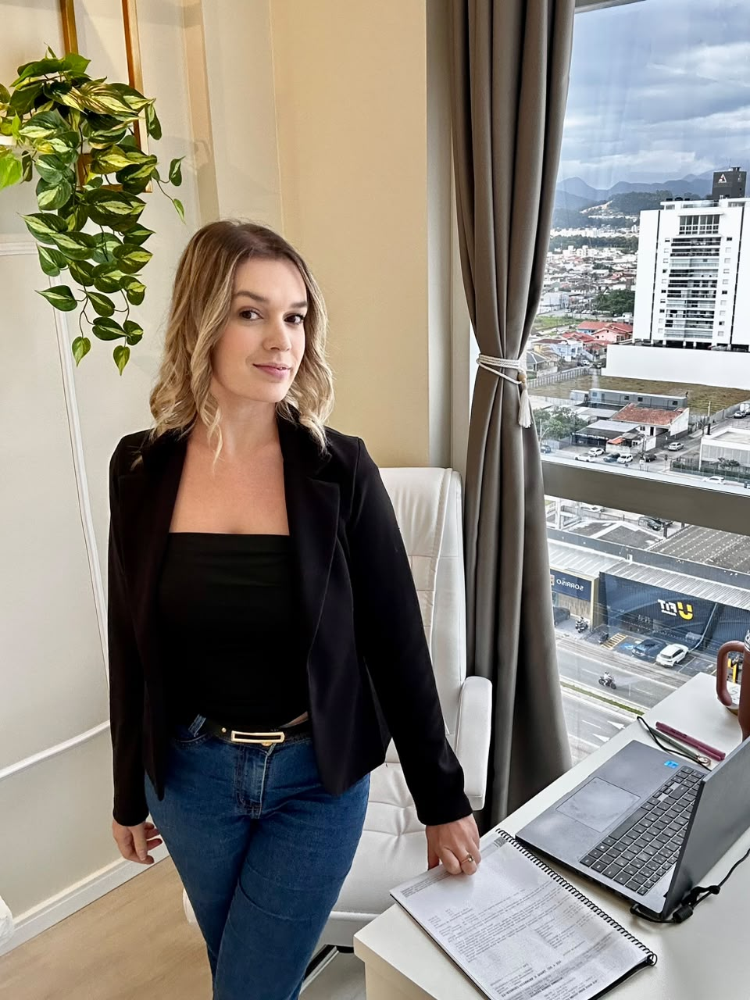
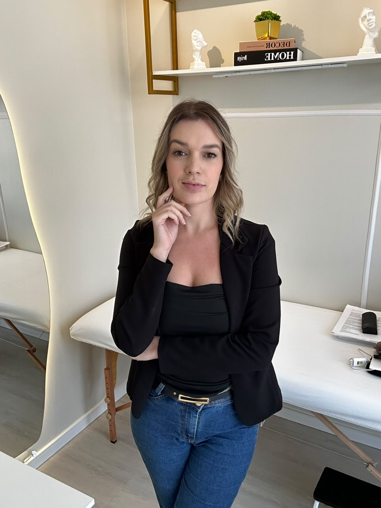
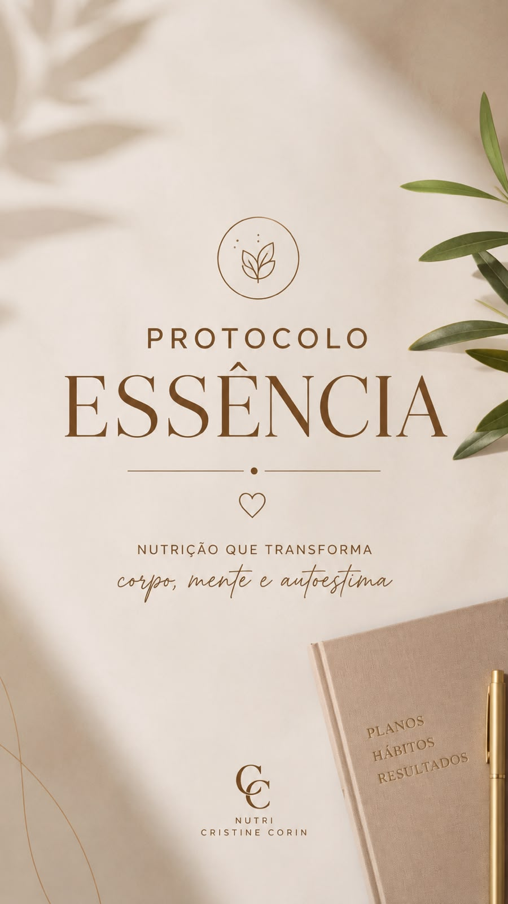
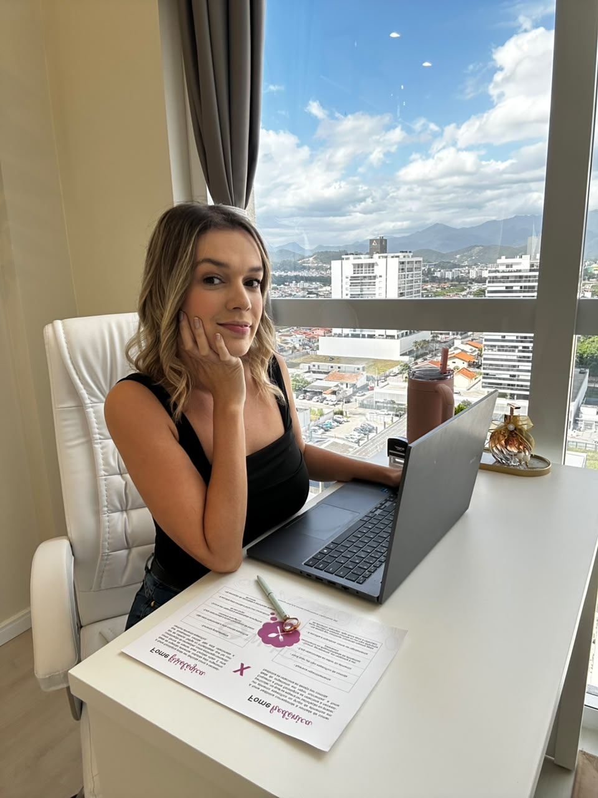

Sua rotina importa.
Planos alimentares individualizados e orientações pensadas para a sua rotina e seus objetivos.
NUTRIÇÃO FUNCIONAL & ESTÉTICA
Um olhar atento para a sua rotina.
Um cuidado que faz sentido para você.
Cristine CorinNutricionista Funcional & EstéticaCRN 10-13656

UM CUIDADO QUE FAZ SENTIDO
Planos alimentares individualizados e orientações pensadas para a sua rotina e seus objetivos.
Hábitos construídos no dia a dia, com espaço para o equilíbrio e a constância.
Presença, escuta e acompanhamento próximo, com ajustes ao longo da sua jornada.

PRAZER, CRISTINE CORIN
Nutricionista Funcional & Estética · CRN 10-13656
Cuidar da alimentação também é olhar para os hábitos, a rotina e a relação com a comida.
Na proposta de cuidado da Cristine, estratégias personalizadas e acompanhamento próximo caminham juntos. Para que cada orientação encontre espaço na sua vida.
“Você no centro de tudo!”— Protocolo EssênciaConheça mais no Instagram
UM MÉTODO. UM CUIDADO MAIS PRÓXIMO.
POR CRISTINE CORINPROTOCOLO
Muito mais que uma consulta.
Nutrição, hábitos e acompanhamento se encontram em uma proposta que coloca você no centro do cuidado.
Um plano pensado para a sua rotina, com orientações e ajustes que acompanham a sua jornada.
Conhecer o Protocolo EssênciaNUTRIR · CUIDAR · EQUILIBRAR

Planos alimentares individualizados, práticos e equilibrados.
Um olhar para o corpo como um todo, para a energia e a disposição.
Atenção à autoestima e à relação com a comida.
Pequenas escolhas diárias para construir constância.
Suporte próximo e ajustes personalizados ao longo do caminho.
CONHEÇA MAIS DE PERTO
Conheça a proposta e os pilares do protocolo nos materiais da Cristine.
Toque nas imagens para ampliarÉ a proposta de acompanhamento da Cristine que reúne nutrição inteligente, corpo e bem-estar, mente em equilíbrio, hábitos e acompanhamento premium. Você pode conversar com ela para conhecer os detalhes e entender como a proposta se aplica à sua rotina.
Sim. A proposta do Protocolo Essência inclui planos alimentares individualizados, orientações e ajustes pensados para a sua rotina e seus objetivos.
Entre em contato pelo WhatsApp para consultar valores, horários, modalidades de atendimento e os próximos passos.
Consultar pelo WhatsApp ↗Envie uma mensagem para a Cristine pelo WhatsApp. Conte o que você busca e tire suas dúvidas sobre o acompanhamento antes de agendar.
UM CONVITE PARA CUIDAR DE VOCÊ
Vamos encontrar espaço para o seu bem-estar?
Conversar com a Cristine WHATSAPP · (48) 98844-5220